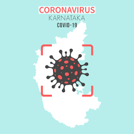

Corna Cases in Karnataka

Karnataka Bengaluru Coronavirus News Live Updates: Karnataka on Sunday recorded 7,810 fresh cases and 125 deaths taking the total infection count and toll to 27.65 lakh and 32,913 respectively. The state has 1,80,835 active cases whereas the total discharges stood at 25,51,365 with the recovery of 18,648 people. The COVID infections in Bengaluru Urban district remained the highest with 1,348 infections and 23 deaths.
Mysuru district remained the second major COVID hotspot with 1,251 and 25 fatalities. According to the health bulletin, there were 581 infections in Hassan, 467 in Mandya, 434 in Dakshina Kannada, 393 in Shivamogga, 391 in Davangere and 352 in Tumakuru. Fresh cases were reported in other districts as well including Ballari, Belagavi, Bengaluru Rural, Chikkamagaluru, Kodagu, Kolar, Udupi and Uttara Kannada.
Climate Changes
A warmer, changing climate is a threat to the entire world. Climate change affects the entire world population, and the Union of Concerned Scientists calls this social issue "one of the most devastating problems humanity has ever faced."
The 800 million people already living in extreme poverty will be impacted most severely. Around the world, people are already noticing warmer winters, more severe storms and rainfall events, and more frequent wildfires. These issues already put stress on governments and systems in many countries.
Technology News
Bharti Airtel has kicked off its 5G trial network in Gurugram just a little over a month after the government gave its go-ahead to telecom operators in India to carry out trials on the next-generation cellular network technology, Gadgets 360 has learnt. The telco is giving its 5G network at a maximum speed of over 1Gbps. The site where the trial is currently running is operating in the 3500MHz band. Earlier this year, Airtel demonstrated its 5G network using liberalised spectrum in the 1800MHz band.